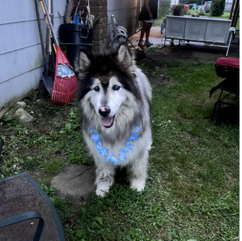
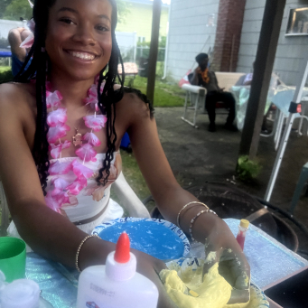
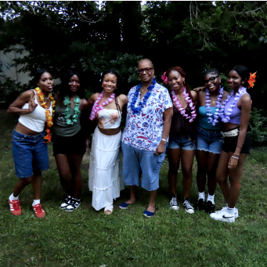

Return to Gallery
Ary’s Turnt 20 Sexyy Slime Birthday party
  
For my birthday after pondering what I wanted to do for weeks I finally thought to have a cute Luau theme. A couple weeks prior, Sexyy Red also dropped her song “It’s My Birthday” hence the title. We also had a slime making session that turned my hands blue for 2 days. Even though the theme was planned very last minute, this is still probably one of my best birthdays ever.
Then what happened?